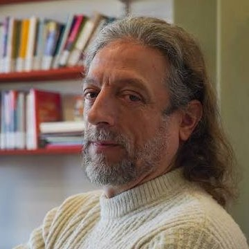

Instituto de Investigaciones en Didáctica de las Ciencias Naturales y la Matemática
Investigación, formación de posgrado y extensión universitaria sobre la enseñanza y el aprendizaje de las Ciencias Exactas y Naturales.

Institucional
Creación, gobierno del Instituto, reglamento de funcionamiento y política académica.
Ver másInvestigación
Siete grupos de investigación en didáctica de la biología, la química, la astronomía, las ciencias de la Tierra y más.
Ver másPosgrado
Cursos y materias de posgrado para la formación de profesores e investigadores en enseñanza de las ciencias.
Ver másTesis doctorales
Tesis defendidas en el marco del Instituto, con acceso a los textos completos.
Ver másSobre el CEFIEC
El Instituto de Investigaciones CeFIEC tiene como objetivo general el desarrollo de investigaciones e innovaciones, la formación de recursos humanos y la extensión universitaria en el campo de la Didáctica de las Ciencias Exactas y Naturales.
Su trabajo abarca las didácticas específicas de la biología, la química, la física, la matemática, la computación, la geología y las ciencias de la atmósfera y los océanos.
“Tendrá como objetivo desarrollar las actividades de investigación y extensión universitaria relacionadas con los procesos y técnicas de aprendizaje y enseñanza de las Ciencias Exactas y Naturales para el nivel inicial, medio y superior.”


Destacados
Ver todas las novedades →Dossier sobre historia y enseñanza de las ciencias (RBHC)
La Revista Brasileña de Historia de la Ciencia convocó artículos para el dossier “Historia de la ciencia para una educación en ciencias del futuro”.
Leer más PosgradoTeoría del conocimiento, Ecología y Problemática Ambiental
Curso de posgrado organizado por el Grupo de Filosofía de la Biología.
Ver curso OportunidadesPosiciones de investigación
Propuestas para realizar tesis doctorales en didáctica de las ciencias en el Instituto.
Ver oportunidades